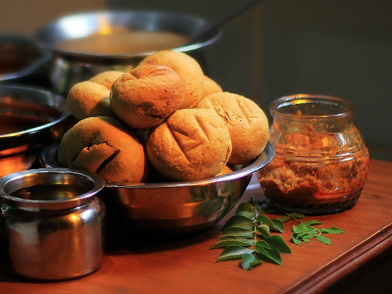

Traditional Food of Rajasthan
1. Dal Bati Churma - Traditional Food of Rajasthan
This famous Rajasthani dish needs no introduction. Dal bati churma is synonymous to Rajasthan; known for its crunchy batis, dipped in ghee along with spicy daal and sweet churma.
2. Mawa Kachori - Traditional Food of Rajasthan
Ever heard of sweet Kachoris? Well, this Rajwadi land has an answer to it, Yes! Mawa kachoris from Jodhpur are a must try dish in Rajasthan. These kachoris are stuffed with mawa along with crispy dry fruits and served hot, making your mornings sweet and perfect!

3. Mirchi Bada- Traditional Food of Rajasthan
Another snacky delight from Rajasthan, Mirchi badas are perfect answers to complement evening tea or morning breakfast. The hot and spicy badas are scrumptiously delicious
4. Mohan Maas - Traditional Food of Rajasthan
Another royal component of the non-veg platter, Mohan maas is a delicately cooked meat-dish. Stuffed with dry fruits and cooked in milk and cream and finally garnished with cardamom and cinnamon, Mohan maas is a rajwadi version of non-veg delights.
5. Kalakand - Traditional Food of Rajasthan
The lion gate of Rajasthan is also famous for its soft and delicious Mawa-dish called kalakand. An ancient sweet dish, Alwar's Kalakand stands apart as a heavenly delicacy.
6. Pyaaz Ki Kachori - Traditional Food of Rajasthan
A common breakfast snack from Rajasthan, pyaaz ki kachoris are yummy kachoris stuffed with onions, spices and garnished with chutneys and dahi.
7. Bajra ki Roti with Lehsun Chutney - Traditional Food of Rajasthan
Bajra is one of the most popular dishes in Rajasthan consumed by most states in India. The taste of crispy roti goes well with the lehsun and onion chutney. This spicy dish of Rajasthan lets your mouth water to the feeling of garlic cloves and red chilly powder. As the delicious dish slides down your throat, you can feel the aesthetic taste of Rajputana

8. Balushahi - Traditional Food of Rajasthan
I'm sure if you're a south Indian you must have heard of Balushahi? Well, Balushahi is the name in North India. It resembles closely to glazed doughnuts without holes. The soft, sweet and delicious sweet gets you drooling, and it is one of the simple saccharine dishes that could be made hassle-free.
9. Gujia - Traditional Food of Rajasthan
Gujia is a dainty sweet dish full of ecstasy that can be found everywhere during the festival of Holi or Diwali. Curated with tenderness of mouth-melting sweetened khoya (milk solids, also known as Mawa) and crushed dry fruits, Gujia is moulded into little dumplings made out of either suji (semolina) or maida (all purpose flour), deep fried to add the element of crisp, making it a must try Rajasthani delicacy to be enjoyed while celebrating the grand Indian festivals!

10. Kalmi Vada - Traditional Food of Rajasthan
Kalmi Vada is an authentic Rajasthani munchie, perfect for evening cravings. This crunchy, full filling, healthy snack is a melange of coarsely blended batter of chana dal (split chickpeas), elevated with some green chillies, onion, and common spices. Its stimulating flavours and texture will leave your hands reaching out for just one more again and again! It is served hot with refreshing green chutney.